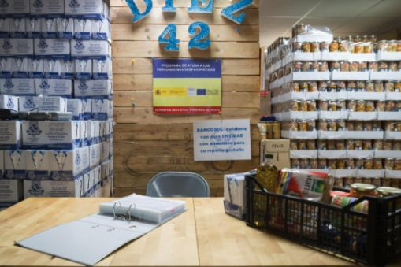
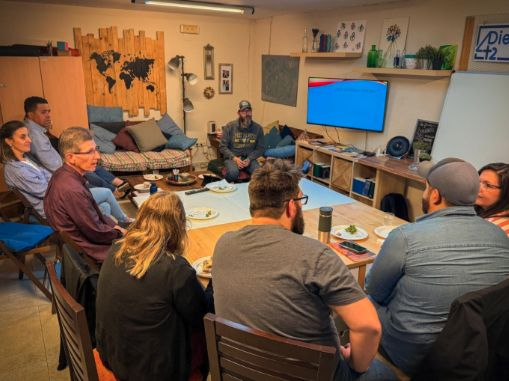
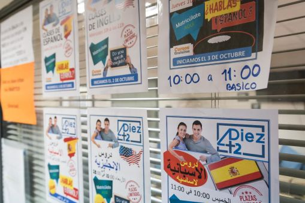
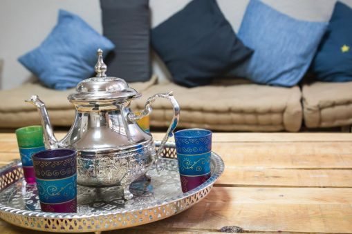
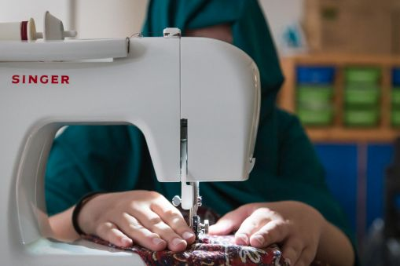

01
Practical support
Food support, orientation, and everyday help for families finding their footing in Málaga.

Asociación para el Desarrollo e Integración Diez42
Welcome and practical help in Málaga.
About
Diez42 serves immigrants, refugees, and other newcomers in Málaga through practical support, education, training, family activities, food support, and steady community presence.
Programs

Food support, orientation, and everyday help for families finding their footing in Málaga.

Language practice, job training, children's activities, and learning paths that open doors.

A local place for relationship, encouragement, family activities, and belonging.

Hands-on projects, creative training, and practical skills that help people build confidence.
Contact